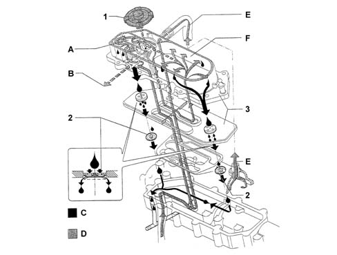

OIL VAPOUR RECIRCULATION SYSTEM
- Path
- Descriptions > 10 ENGINE > OIL VAPOUR RECIRCULATION SYSTEM
- Kind
- system description
- Applies to
- engines: 2.3 JTD 16V; all production periods
- Interactive page
- https://sloeber94.github.io/elrnDB-fDct/en/#/244000366
Applies to: engines: 2.3 JTD 16V; all production periods
Oil vapours that leak from the cylinder head extension cover and build up in the sump during engine operation are channeled into a condenser/separator filter known as the blow-by filter. The filter is divided into two sections:
- most of the vapours condense in the first, labyrinth section, and return to the sump;
- the second section contains a coalescence filter that condenses the remaining proportion of the vapours, which return to the sump through another umbrella valve.
The uncondensed vapour proportion is sent via a MANN-HUMMEL control valve to the intake duct and burnt during normal engine operation.

- 1 - MANN -HUMMEL control valve
- 2 - Umbrella valve
- 3 - Blow-by filter
- A - Labyrinth
- B - Intake oil vapour recovery flow
- C - Oil return flow to sump
- D - Oil vapour flow from sump
- E - Oil vapour flow from cylinder head extension
- F - Coalescence filter